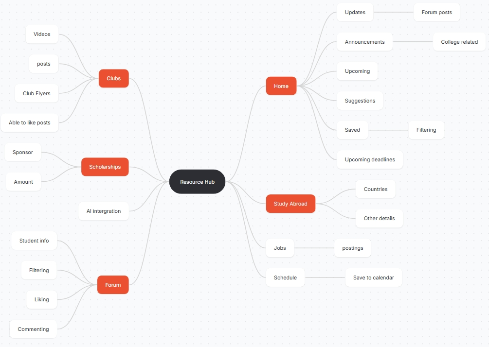

UX CASE STUDY
CUNY InResource
Helping Baruch students discover campus opportunities faster through a centralized student resource platform.

UX CASE STUDY
Helping Baruch students discover campus opportunities faster through a centralized student resource platform.
Challenge
Baruch students, especially freshmen, struggle to efficiently access and understand campus resources because information is fragmented across multiple platforms and lacks clarity.
Students often rely on peers, social media, and AI tools for guidance because official systems feel overwhelming and time-consuming to navigate.
As a result, many students miss opportunities related to scholarships, clubs, internships, and study abroad programs.
How might we create a centralized platform that helps students quickly discover reliable campus opportunities?
Research
I conducted interviews with 5 Baruch students to understand how they discover campus resources and where they experience friction.
Students value getting quick answers over navigating multiple official platforms.
Students trust classmates and social media because information feels more approachable.
Many first-year students struggle to navigate college systems independently.
Synthesis
After completing interviews, I organized key quotes and behaviors into an affinity map using Miro.
This helped identify repeated patterns around accessibility, confusion, and how students seek information.

Define
After conducting user interviews and affinity mapping, several consistent behavioral patterns emerged around how students discover and interact with campus resources.
Students are not lacking access to information — they are struggling with how fragmented, time-consuming, and unclear that information is to navigate.
While official platforms exist, students often bypass them in favor of faster and easier alternatives.
Students rely heavily on classmates, social media, and AI tools because these sources feel more immediate and digestible.
Many first-year students feel overwhelmed navigating college systems independently, leading to missed opportunities.
These insights revealed a gap between the availability of information and the accessibility of information.
I prioritized features based on user needs, focusing on quick access to high-impact resources such as academic support and extracurricular opportunities.

Design Process
I iterated through multiple stages of fidelity to refine the structure, usability, and visual experience of the app.
Since students described wanting an experience that felt modern and intuitive, I focused on creating a system inspired by familiar browsing behaviors found in social media platforms.
Low-Fidelity
I began with low-fidelity wireframes to focus on layout, navigation, and overall usability before introducing visual styling.
During this stage, I explored how students would browse opportunities, filter information, and move between sections efficiently.


Information Architecture
After identifying the core MVP features, I developed a sitemap to organize the platform into clear categories and reduce friction during navigation.
My goal was to create an experience where students could quickly discover opportunities without feeling overwhelmed.
.jpg)
Mid-Fidelity
Next, I refined the layouts and introduced more realistic content to test the usability of the experience.
Using feedback from users, I improved hierarchy, filtering interactions, and content organization to create a cleaner browsing experience. I also introduced Baruch College's Brand guide through color and fonts.


High-Fidelity
For the final interface, I applied Baruch College's visual identity while modernizing the experience through cleaner layouts, vibrant accents, and approachable interactions.
I designed the interface to feel lightweight, modern, and easy to browse while maintaining accessibility and clarity.

Final Product
The final experience was designed to feel modern, approachable, and easy to navigate while helping students quickly discover campus resources and opportunities.
Reflection
This project reinforced how accessibility is not just about having information available, but about making it easy to discover, understand, and act upon.
One of the biggest challenges was balancing a large amount of information without overwhelming users. Through testing and iteration, I learned how important hierarchy, filtering, and content organization are in reducing cognitive overload.
Research revealed that students value convenience and speed over navigating traditional systems. This shifted my perspective from simply designing an information hub to designing an experience that feels approachable, intuitive, and familiar.
Given more time, I would expand personalization features, integrate AI-assisted recommendations, and conduct additional usability testing across different CUNY campuses to better understand broader student needs.
“Good design is not about adding more features. It’s about reducing friction and helping people feel confident navigating their experiences.”